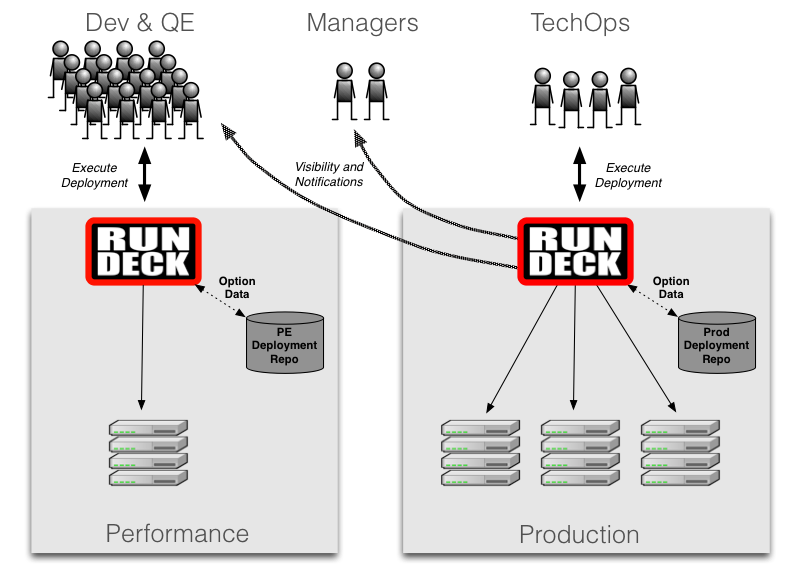

TechOps, responsible for production deployments at Data.com, was facing dual requirements that seemed at odds with each other. On one hand, engineers and managers from across the technology organization needed to be able to watch production deployments while they happen and examine the output if any issues or anomalies arise. On the other hand, because Data.com takes the security and integrity of their user’s data very seriously, direct access to production systems had to be restricted to only the TechOps team.
The old method of deployment consisted of having TechOps run scripts on the command line, tailing log files, and then pointing people to log files in Splunk if there was a problem. This was ineffective and inefficient. It was always difficult to quickly pinpoint where any problem was. Was there something wrong with the script? Was there something wrong with the artifacts being deployed? Was there an environment difference unaccounted for? Was a step skipped or run out of order? The lack of visibility also impacted the Release Managers who in order to follow along had to stand by, mostly idle, and interpret information being received from others. To top it off, after the deployment was finally finished there wasn’t a single place to look to answer questions like: Who started it? How long did it take? What exactly happened? When did it begin/finish?
TechOps solved this set of problems by using Rundeck to drive deployment and other production change activity. First Prakash took the long run list of deployment steps (some manual, some scripted) and turned it into a series of Rundeck Jobs. This gave the immediate benefit of making the entire procedure repeatable, access controlled, and auditable. Now anyone in TechOps with the right permissions could consistently execute a deployment. Prakash had a wide range of scripts that the Rundeck jobs would call, so he introduced Rerun to organize and create a clean interface between Rundeck and the jobs’ script implementations.
Next, Prakash extended read-only access to Rundeck to other interested parties in the technology organization. Now, all of the right people can follow a deployment closely while they do their other work. If anything goes wrong, anyone can quickly see where in the process the deployment had an issue, examine the output, and quickly decide on a concrete course of action. To provide even more visibility, Prakash’s team also integrated Rundeck with their internal chat service so others are notified when job activity begins and ends. The end result is that visibility into operations activity is now shared by all without compromising their strict security policies.
Developers can deploy to all development and test environments except for specific performance testing environments. These performance testing environments access user data to perform the final tests before a release moves to production. Since there is confidential user data in these environments, TechOps must control these environments using the same security constraints as production. As the pace of development and testing increased inside Data.com, there was a concern that TechOps would be swamped with requests to deploy or redeploy releases to these performance test environments.
TechOps solved this problem by using Rundeck to safely provide push button self-service process to deploy into the performance testing environments. Now, Devs and QE with the correct permissions can use Rundeck to deploy releases from a certified repository to performance environments and Rundeck provides all of the output they need to troubleshoot. Rundeck allows TechOps to keep an eye on the performance environment deployments as they happen and, of course, everything is logged for auditing and review. TechOps manages the Rundeck instance and uses the same deployment jobs that are used in their production Rundeck. With this setup, Dev and QE are happy that they can update the performance environments and test them without delay. TechOps is happy because they gave this self-service capability to their internal customers while not adding to their regular workload.
TechOps must regularly patch deployments every 2 months to remain compliant. Unfortunately, patching was a very time consuming task. For example, to patch a server, one needs to deploy the patched versions of software, reboot the host, wait for it to come online, and proceed to the next server. Doing this manually took a long time and was arduous work.
Because the TechOps team packaged processes like deployment and restarts as modular Rundeck jobs, creating a patch process was very quick to do. The patch process would reuse all the deployment automation. When new patch processes come up, TechOps adds the new procedures as Rundeck Jobs. When it comes time to deploy a patch, the person doing the patch just kicks off the Rundeck Job and watches the output and sends the log output to the interested parties. This approach to building the patch process on top of their existing automation made their conversion from CentOS 5 to RHEL 6 much easier.
This improved patching process showed that through the combination of tools like Rundeck, Rerun, and RPM, Data.com is closing in on their goal of automating operations while providing visibility.
